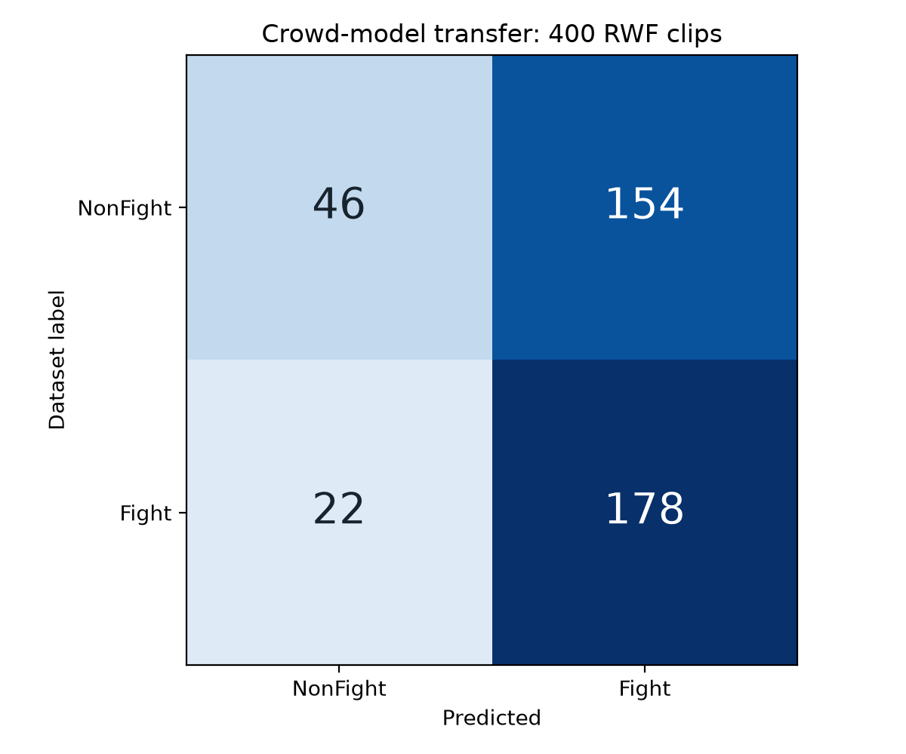

2026-11-15
One-time RWF-2000 transfer evaluation
The saved combined crowd model was evaluated with its fixed threshold 0.54 on the released RWF evaluation split. Its crowd-training normalization is reused. One known earlier demo clip is also excluded in a supplementary result.
| Evaluation | Clips | Accuracy | Macro-F1 | ROC-AUC |
|---|---|---|---|---|
| All released evaluation clips | 400 | 56.0% | 0.506 | 0.578 |
| Excluding known prior demo | 399 | 56.1% | 0.508 | 0.577 |
| Pose-supported subset (secondary) | 347 | 54.2% | 0.410 | 0.508 |
Fight precision: 0.536; recall: 0.890. Low-pose clips: 53. All clips remain in primary metrics.

Exploratory transfer of a crowd-trained classifier to the released RWF-2000 evaluation split. No RWF training, normalization fitting, checkpoint selection or threshold tuning is performed. This is different from supervised training and evaluation on RWF. Supplied labels are retained. One known clip was inspected in an earlier demo; other prior viewing and unknown shared footage cannot be ruled out. Scores are not calibrated probabilities. All clips remain in primary metrics, including low-pose cases.
Evaluation wall time: 3.17 minutes. Fresh full-video decode and sampled pose extraction, cache writes/loads, fixed feature normalization and GPU classification. Includes model initialization; excludes inventory preparation and report generation. Not a cold/warm per-video latency benchmark.
Research notes | Predictions | Metrics | Audit | Frozen protocol